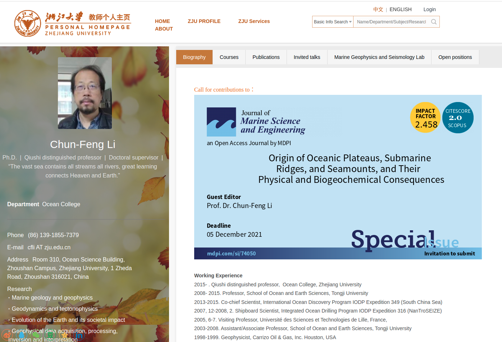
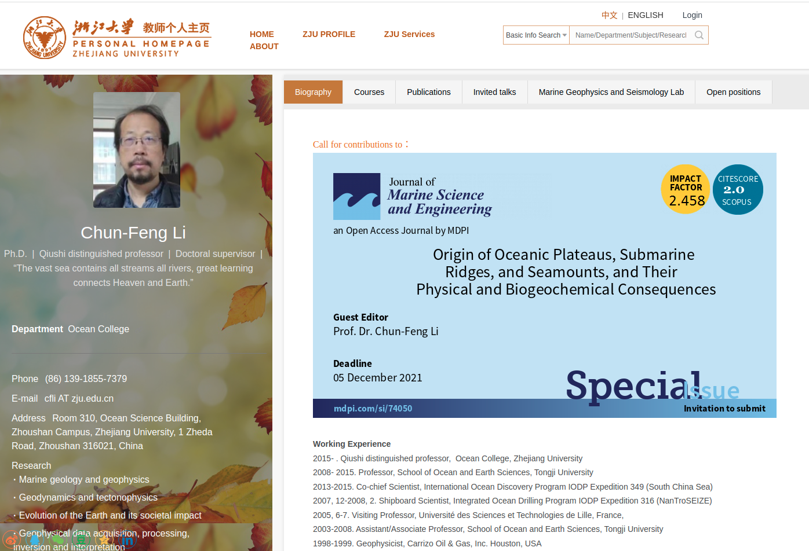

Academic Qualifications
| Ph.D. Earthquake Seismology | The Chinese University of Hong Kong | (2020-Present) |
| M.S. Marine Geology | Ocean College, Zhejiang University, China | (2017-2020) |
| B.S. Geophysics | Quaid-i-Azam University, Islamabad, Pakistan | (2013-2017) |
Research Interests
- Induced Seismicity
- Seismic Attenuation
- Seismic Data Processing and Interpretation
- Seismic Hazard and Risk Assessment
- Synthetic Waveforms Modelling
- Marine Geology & Geophysics
- Crustal Structure by using Ocean Bottom Seismic Data
Current Research Projects
- 2022-onward: Seismic Attenuation and Waveform Analysis associated with fluid-injected and structural heterogeneities in Weiyuan Shale Gas Field,China
- 2021-2022: Evaluating and correcting short-term clock drifts in Ocean bottom seismometers and Land stations.
Awards
Memberships
Student member : Society of Exploration Geophysicists (2016-2023) Membership Card
Student member : European Association of Geoscientists and Engineers (EAGE)
{kind=link}
Student member : European Association of Geoscientists and Engineers (EAGE)
Research Skills
Useful links

 


Seismology Tutorial -Yang's group at CUHK
News
/under progress.
The link provides Aqeel Abbas's resume. Resume
Link to my LinkdIn Aqeel LinkdIn